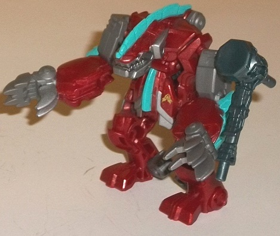

Bumblebee
(Night Shadow) vs. Blight (Predacons Rising) [Target Exclusive]
Bumblebee
(Night Shadow) vs. Blight (Predacons Rising) [Target Exclusive]
Set Price
: $10 U.S.
Overall Rating
: 8.8
(NOTE: Because this set is composed of repaints,
this is not a full-blown review. This mainly covers any changes made to
the set and the color scheme, and merely compares it to the original versions
of these molds. For a review on the original Beast Hunters Blight, go
here
.
For a review on the original Prime legion class Bumblebee toy, go
here
.)
Blight

Allegiance
: Predacon
Size
: Legion
Difficulty of Transformation
: Very
Easy
Color Scheme
: Dark semi-metallic
red, moderately dark milky gray, and some silver, moderately light electric
blue, yellow, red, and dark bluish gray
Individual Rating
: 9.3
I'm not sure why this
version of Blight has no "descriptive prefix" to his name or a different
name altogether; I guess this is just Blight when he gets really mad. Anyways,
this variant swaps Blight's original dark blue for pretty much its polar
opposite-- dark red. It's a rather nice shade of the color, being a bit
glittery and semi-metallic looking, and just generally catches the eye.
There's also quite a bit of gray plastic on Blight, but thankfully it's
not of that boring, bland light milky shade of gray that's used on way
too many TFs-- rather, it's a slightly dark shade that looks considerably
better and more "metal-like". To give Blight some lighter colors, silver
paint has been used on some parts like his claws/robot heels, his mouth
and neck, and main body. It blends in with the dark gray surprisingly well,
while also providing a bit more contrast against the dark red. For a main
accent color, Blight has a nice electric blue on his head and chest fins,
as well as on his beast hips/robot shoulders, and it contrasts with the
dark red very well, giving the whole scheme some nice light accents. Another
nice little touch is that Blight's robot face is yellow with a regular
shade of red for the optic visor-- it fits Blight's more "fiery" appearance
this time around, and I love it when accent colors are only used on one
small portion of the toy-- it adds just that much more to the look. On
one final minor note, Blight's hammer weapon on this version is a dark
bluish gray-- a pretty fitting color for a hammer, I must say, even if
it's not particularly exciting.
No mold changes have
been made to this version of Blight.
Blight Tech Specs:
Strength: 10.0
Intelligence: 2.0
Speed: 3.0
Endurance: 9.0
Rank: 1.0
Courage: 10.0
Fireblast: 8.0
Skill: 3.0
Bumblebee
(Night Shadow)
Allegiance
: Autobot
Size
: Legion
Difficulty of Transformation:
Very
Easy
Color Scheme
: Black, dull yellow,
and some milky bluish gray, silver, metallic off-white, and moderately
light electric blue
Individual Rating
: 8.2
Night Shadow Bumblebee
follows the usual "inverse color scheme" redeco that's often applied to
Bumblebee, with black being the main color now and yellow being more of
a secondary color. That said, it's definitely not simply a yellow-and-black
color swap; there's three long stripes going down Bumblebee's vehicle mode
this time around, unlike the angled lines on his original design. (Honestly,
I like the angled lines better-- more visually interesting and unique.)
There's also a bit of yellow on the crest on his robot mode and lower legs.
Overall it contrasts well with the black, though not as well as a lighter
yellow-- or gold like on the
deluxe Night Shadow
Bumblebee
-- would have looked. What really helps to up the "interest
factor" here visually is all the silver and, oddly, metallic white. Bumblebee
has silver on some standard places like his face, engine-gun, and the "armor"
bars on the sides of his vehicle mode. The metallic white is used for 'Bee's
headlights and windows-- I particularly like this shade, as it not only
contrasts with the black but complements the silver, and also is a fitting
color for the windows and headlights of a black vehicle, to help them stand
out a bit more. Bumblebee's crossbow weapon is a rather dull milky bluish
gray-- a rather meh color, but it works decently enough as a weapon accessory.
As one final note here, the shade used for Bumblebee's eyes and Autobot
symbol on the side of his vehicle mode is a really nice, attractive shade
of light blue that I wish had been used just a bit more-- particularly
in the robot mode, where there are very few robot mode-specific paint apps.
No mold changes have
been made to Night Shadow Bumblebee specificially, though he has the same
mold changes made to the
initial "Beast Hunters"
release
of this mold.
Bumblebee (Night Shadow) Tech Specs
:
Strength: 6.0
Intelligence: 8.0
Speed: 8.0
Endurance: 7.0
Rank: 7.0
Courage: 10.0
Fireblast: 6.0
Skill: 6.0
The "Night Shadow" 'Bee
and "red" Blight set is a pretty darned good two-pack, featuring one decent
and one great Legion-class mold and giving both of them more visually interesting
color schemes that are my favorites out of the various paint jobs either
of these molds have had. Also, at $10 U.S., they're slightly less expensive
than if they were sold separately, so it's a minor bargain as well. If
you're at all into Legion-class toys and/or the Beast Hunters aesthetic
and don't mind "same character" repaints, this is an easy recommendation.
Reviews by Beastbot
Back to Transformers:
Prime Index